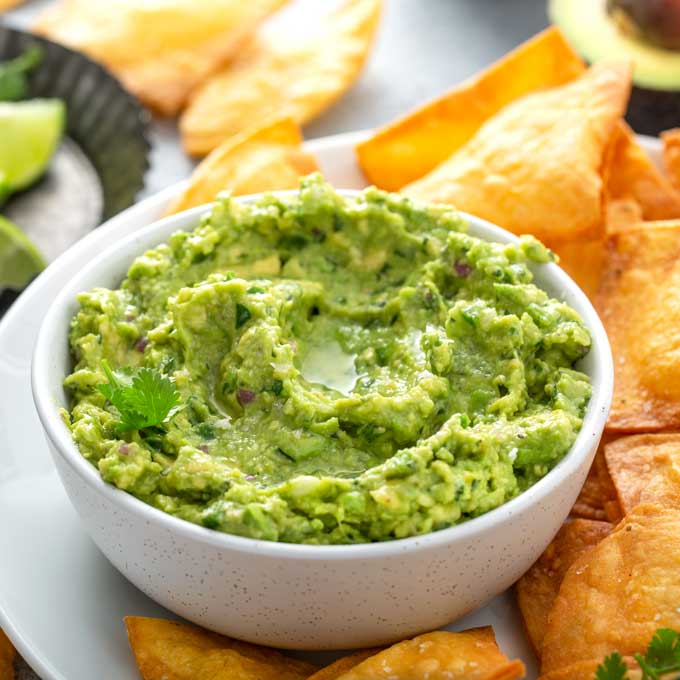

Easy Guacamole

What you will need
- 2 Avocados
- Garlic
- 1.5dl Sour cream
- Salt
Instructions
- Cut the avocado in half and scoop out the green avocado meat into a tiny bowl
- mush it up then put 1.5 dl of sour cream into the bowl and mix
- take a garlic and finely slice it or crush it in a garlic press
- add salt and mix it all up, test and see if requires more salt or garlic then serve
Go back to recipe site